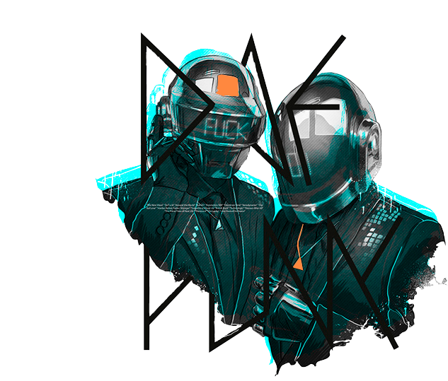

Loose Your Self to Dance
Pick any Daft Punk song or album from its 20-year history, and it sounds good enough to be released tomorrow.

Pick any Daft Punk song or album from its 20-year history, and it sounds good enough to be released tomorrow.
Daft Punk is one of the most influential musical act of the last 20 years. Dance and electronic music defines the musical movement of our era. It's leaked into rock, rap and even country. It is the pop sound of the day, and Daft Punk has most certainly played a heavy hand in that sonic domination.
Daft Punk is the kind of band other bands write songs about (looking at you, LCD Soundsystem). When Skrillex accepted his first Grammy, he was all “I think Daft Punk should have won Grammys.”
The French duo invented the concept of the bedroom producer with its first album Homework in 1997, yet Daft Punk has had only two tours in 20 years, the second of which launched the modern dance music stage production concept.
Released in 1997
16 songs
Released in 2001
14 songs
Released in 2005
10 songs
Released in 2010
22 songs
Released in 2013
14 songs